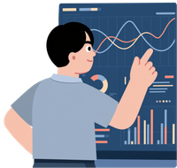

Hola! Soy
Sabrina Rojas
Ingeniera de sistemas con habilidades en Análisis, Diseño y Desarrollo de sistemas.
Ver trabajos¿Que puedo ofrecer?

Analista de sistemas
Especialista en la optimización de procesos mediante el diseño y desarrollo de soluciones tecnológicas eficientes.
Desarrollador Back-end
Especialista en la construcción de arquitecturas de servidor robustas y escalables para cada usuario.

Ingeniería de requerimientos
Garantizar que cada solución tecnológica esté perfectamente alineada con los objetivos del cliente.
Desarrollador Front-end
Creación de interfaces de usuario atractivas, intuitivas y totalmente responsivas personalizable.